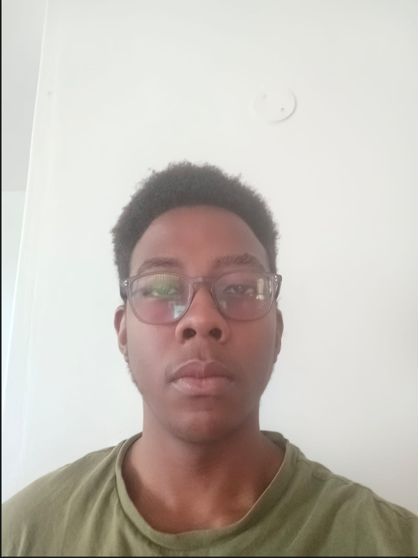

Marshall Ngari
Aspiring Mechatronics Engineer
About Me
I am Marshall Ngari, an aspiring Mechatronics Engineer with a passion for problem-solving and innovation. Growing up in Kenya, I have always been fascinated by aircraft and enjoyed tinkering with tools, which inspired my journey into engineering.
I aspire to one day contribute to aircraft development and help create technologies that can give back to the world. As I continue developing my knowledge of signal processing, I have also developed an interest in radar technology and hope to contribute to its advancement.
To me, a great engineer is someone who works with integrity, embraces challenges, and uses their skills to give back to the community.
Hobbies
When I am not studying, I enjoy reading, particularly novels by authors such as Jeffrey Archer and David Baldacci. I also enjoy coding, especially working on random projects and tasks, playing games, and listening to music.
When it comes to sports, I occasionally play golf non-competitively. I also enjoy spending time outdoors, whether that is walking my dogs, hiking, or simply going for a walk.